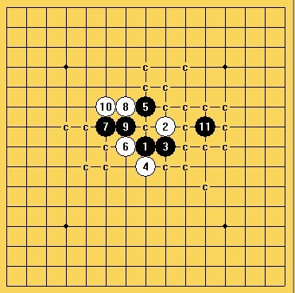

云月最强四三打地毯
#1 云月最强四三打地毯作者：牟林昊 发表时间：2013-6-19 12:31:23
三打确定地毯，闲来无事花了几天时间，比传统二打稍微简便，推翻了传统老定式的说法。最强六防如下
［ 屏蔽 于 2013-6-19 13:34:14 时花20金币送鲜花一朵］
［ 屏蔽 于 2013-6-19 13:34:14 时花20金币送鲜花一朵］
［ 日月丽天 于 2013-6-19 14:10:30 时花20金币送鲜花一朵］
［ 日月丽天 于 2013-6-19 14:10:30 时花20金币送鲜花一朵］
［ 日月丽天 于 2013-6-19 14:10:30 时花20金币送鲜花一朵］
［ 逆刃 于 2013-6-19 14:42:41 时奖励此帖[金币加 100 威望加1］
#2 Re:云月最强四三打地毯作者：屏蔽 发表时间：2013-6-19 13:34:36
小丸赶快把山口版块开开！一堆宝贝呢！#3 Re:云月最强四三打地毯作者：罗源棋手 发表时间：2013-6-19 13:42:46
咦，这是神马情况。。。大神看看有没啥漏洞啊，没有的话就碉堡了。。。#4 Re:云月最强四三打地毯作者：日月丽天 发表时间：2013-6-19 14:12:53
不简单
这个5，还可以变通恒星
#5 Re:云月最强四三打地毯作者：侯军学棋 发表时间：2013-6-19 15:25:09
我没地毯谱
#6 Re:云月最强四三打地毯作者：絕版賭徒 发表时间：2013-6-19 23:39:46
这个，，，不是最强四。。。。［ 牟林昊 于 2013-6-20 13:32:07 时花20金币送鲜花一朵］
#7 Re:云月最强四三打地毯作者：心澈 发表时间：2013-6-20 10:27:38
不错#8 Re:云月最强四三打地毯作者：牟林昊 发表时间：2013-6-20 13:33:52
#9 Re:牟林昊【==Re:云月最强四三打地毯==】作者：月下回廊 发表时间：2013-7-15 0:01:26
#10 Re:云月最强四三打地毯作者：茗弈七夜 发表时间：2013-7-18 20:04:56
由于身边没有合适软件，于是刚刚目测了一下，发现这三个12地毯起来还是有一些难度的，不知哪位大侠能给解答下哈~
#11 Re:云月最强四三打地毯作者：茗弈帝迦 发表时间：2013-7-31 13:01:39
应该是最强两路了，七夜兄请参考，欢迎各位来指证~
［ 茗弈小水滴 于 2013-7-31 13:32:53 时奖励此帖[金币加 100 威望加1］
#12 Re:茗弈帝迦【==Re:云月最强四三打地毯==】作者：空恨社小仙 发表时间：2013-7-31 23:03:26
#13 Re:云月最强四三打地毯作者：虎哥 发表时间：2013-8-1 9:24:15
［此帖子已被 虎哥 在 2013-8-1 9:27:00 编辑过］
［ 空恨社小仙同学于 2013-8-1 13:57:29 时花20金币送鲜花一朵］
［ 空恨社小仙同学于 2013-8-1 13:57:29 时花20金币送鲜花一朵］
［ 空恨社小仙同学于 2013-8-1 13:57:29 时花20金币送鲜花一朵］
［ 空恨社小仙同学于 2013-8-1 13:57:29 时花20金币送鲜花一朵］
［ 空恨社小仙同学于 2013-8-1 13:57:29 时花20金币送鲜花一朵］
#14 Re:虎哥【==Re:云月最强四三打地毯==】作者：空恨社小仙 发表时间：2013-8-1 14:02:22
正解！特别是第二图，杀得确实高级精简！
七夜提出的还有一个12什么情况？
#15 Re:云月最强四三打地毯作者：虎哥 发表时间：2013-8-1 14:04:53
这个没什么难的啊，白什么都没有，L10简单杀#16 Re:云月最强四三打地毯作者：絕版賭徒 发表时间：2013-8-1 14:07:22
 分支10.rar还在讨论这个啊,分享一下吧
分支10.rar还在讨论这个啊,分享一下吧［ 空恨社小仙同学于 2013-8-1 14:13:52 时花20金币送鲜花一朵］
［ 空恨社小仙同学于 2013-8-1 14:13:52 时花20金币送鲜花一朵］
［ 空恨社小仙同学于 2013-8-1 14:13:52 时花20金币送鲜花一朵］
［ 空恨社小仙同学于 2013-8-1 14:13:52 时花20金币送鲜花一朵］
［ 空恨社小仙同学于 2013-8-1 14:13:52 时花20金币送鲜花一朵］
［ 行云流水 于 2013-8-12 11:28:33 时奖励此帖[金币加 100 威望加1］
#17 Re:空恨社小仙【==Re:虎哥【==Re:云月最强四三打地毯==】==】作者：空恨社小仙 发表时间：2013-8-1 14:09:04
#18 Re:絕版賭徒【==Re:云月最强四三打地毯==】作者：空恨社小仙 发表时间：2013-8-1 14:12:09
直接分享一下这个五后面所有的地毯吧，我还有八到九个六都没有拆，哈哈！
#19 Re:云月最强四三打地毯作者：絕版賭徒 发表时间：2013-8-1 14:15:43
楼主说地毯了,我可没说,,,,,,
让楼主分享吧,
#20 Re:絕版賭徒【==Re:云月最强四三打地毯==】作者：空恨社小仙 发表时间：2013-8-1 14:29:50
 楼主人呢
楼主人呢
#21 Re:牟林昊【==云月最强四三打地毯==】作者：空恨社小仙 发表时间：2013-8-1 16:25:18
弱弱地问一下，就这样子也只能说明地毯了这个8，说推翻传统老定是不是觉得有点草率了#22 Re:云月最强四三打地毯作者：山城刀客 发表时间：2013-8-2 13:24:31
这个5确定可以完全地毯吗？并且比二打还简单？
#23 re作者：岑小鱼 发表时间：2013-8-7 20:16:23
引用失误没东西，小仙的选点确实能必胜，其中一路变化跟赌徒的相通。［此帖子已被 岑小鱼 在 2013-8-7 20:18:01 编辑过］
#24 Re:云月最强四三打地毯作者：屏蔽 发表时间：2013-8-7 20:58:20
其实二打说难 也就斜月一路……#25 Re:牟林昊【==Re:云月最强四三打地毯==】作者：中原一点红 发表时间：2013-11-20 6:28:08
引用：
原文由 牟林昊 发表于 2013-6-20 13:33:52 :这个5，白6唯一。
此三点都可必。